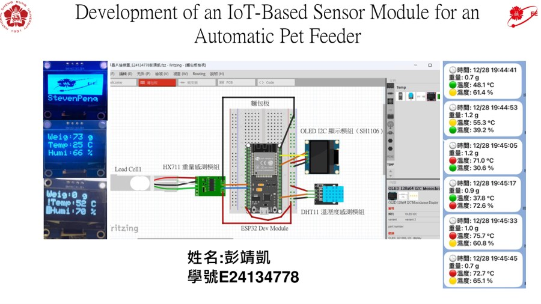
IoT-Based Sensor Module for an Automatic Pet Feeder
ESP32 / HX711 / DHT11 / OLED / LINE API
設計寵物自動餵食機感測模組，整合重量、溫溼度、OLED 即時顯示、Wi-Fi 與 LINE 推播，並以模組化 SDK 降低主程式複雜度。
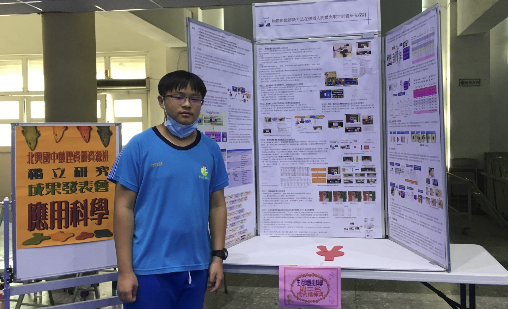
我畢業於嘉義高中數理資優班,從小就是教育部檢定的數理資優生,從國小、國中、高中,就開始參加許多競賽,包含奧林匹克、科展、發明展、旺宏科學獎等等的競賽。其中有些得到不錯的名次。
大學經由特殊選才考上成功大學電機工程學系目前是二年級學生(暑假升三年級)，研究聚焦於數位邏輯、電路系統、嵌入式感測、Arduino與樹梅派、程式語言 python/C++/Qt 應用與 AI 技術整合。從國小科展、國中 AIoT 機器人、高中 SpeakGrader，到大學的 K-map/QM 布林化簡、IoT 感測模組與 C++ 系統開發，我累積了跨領域軟硬體整合與專題實作經驗。未來希望以數位 IC 設計為主要研究方向並透過大專研究專題建立研究基礎，銜接未來申請預研生就讀成大電機工程研究所。。
| 學期 | 學分 | 平均 | GPA | 班排 | 系排 |
|---|---|---|---|---|---|
| 113 上 | 20 | 88.7 | 3.99 | 11/58 | 25/169 |
| 113 下 | 23 | 90.48 | 4.07 | 9/56 | 24/167 |
| 114 上 | 24 | 90.46 | 4.06 | 15/65 | 44/195 |
每張卡片都可在網頁內預覽 PDF，也可以用外部視窗開啟檔案。分類可用於口試、面談或作品集展示。

ESP32 / HX711 / DHT11 / OLED / LINE API
設計寵物自動餵食機感測模組，整合重量、溫溼度、OLED 即時顯示、Wi-Fi 與 LINE 推播，並以模組化 SDK 降低主程式複雜度。
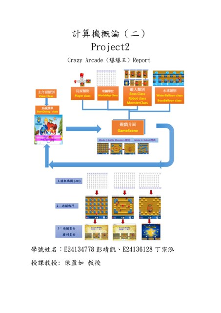
Qt / C++ / BFS AI / Boss Battle
以 QGraphicsScene 與 QTimer 建構 2D 遊戲，完成 Robot 模式、Battle Monsters 模式、水球連鎖爆炸、Boss AI 與 txt 地圖載入。
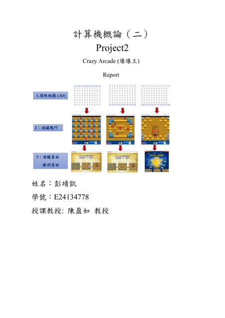
Qt / C++ / Turn-based Battle / Capture System
實作寶可夢風格 RPG，包含場景切換、NPC 互動、草地遇敵、技能 PP、道具背包、捕捉機制與隊伍管理。
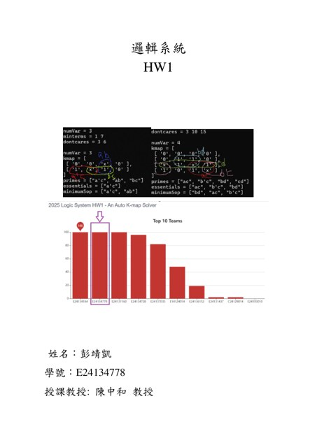
C++ / Karnaugh Map / CASOJ 100
支援 2 至 4 變數 K-map，輸出 Prime Implicants、Essential Prime Implicants 與 Minimum SOP，並完成測試通過。
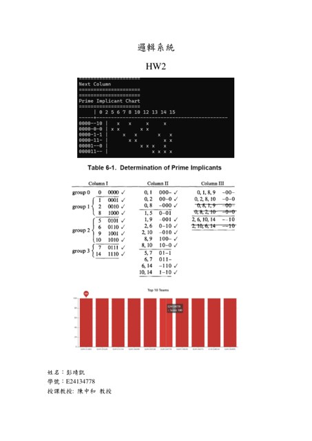
C++ / 8–10 variables / Petrick Method
支援 8 到 10 變數，能輸出每一欄合併過程、Prime Implicant Chart 與所有合法最小 SOP。
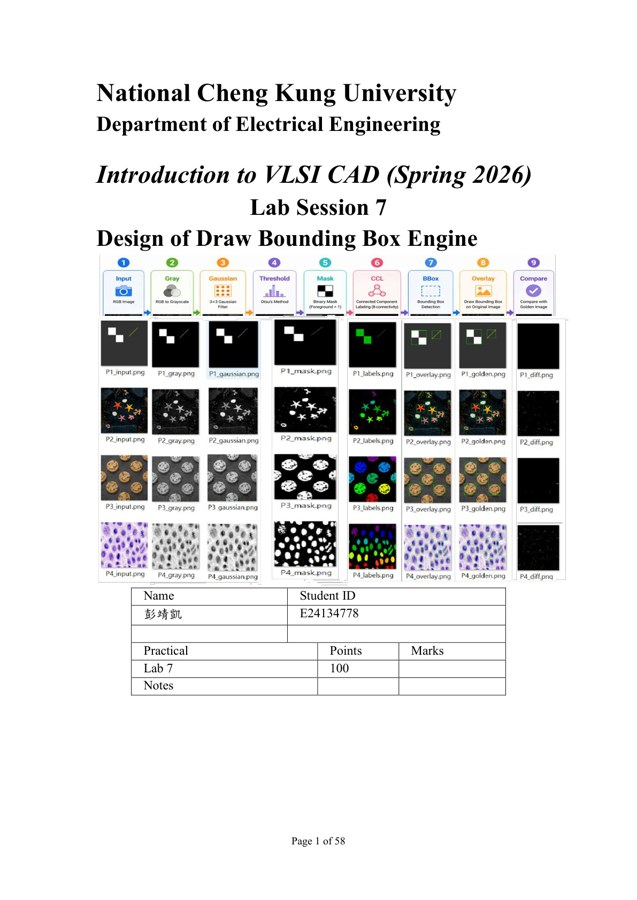
Verilog RTL / FSM / SRAM / 8-Connected CCL / Synthesis
以硬體 RTL 完成 256×256 RGB 影像處理管線，包含灰階轉換、3×3 Gaussian Filter、Otsu Threshold、Auto-Polarity、8-connected CCL、Bounding Box Extraction 與綠色框線 Overlay。RTL 與 Gate-level P1～P4 皆 0 errors，SuperLint coverage 90.25%。
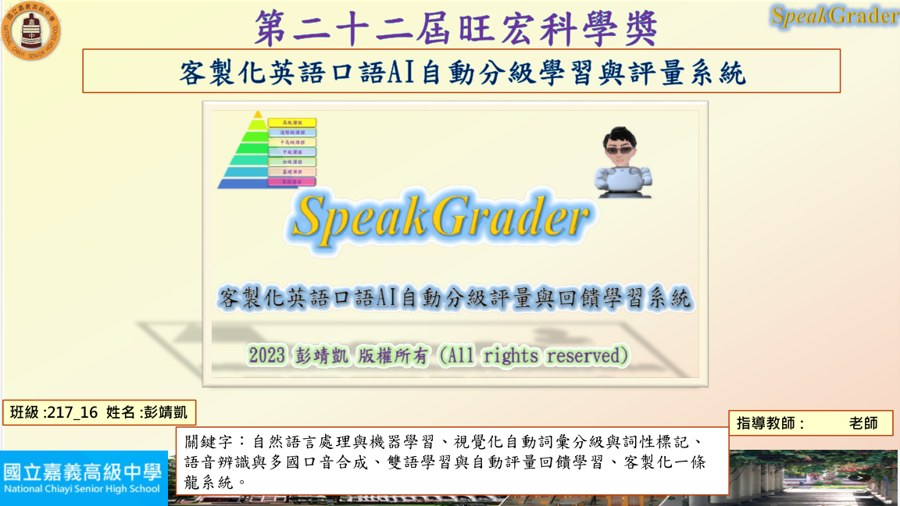
Azure Speech / NLP / Word2Vec / ML
整合語音辨識、多國口音語音合成、詞彙分級、詞性標註、Sliding Window 比對與回饋學習流程。
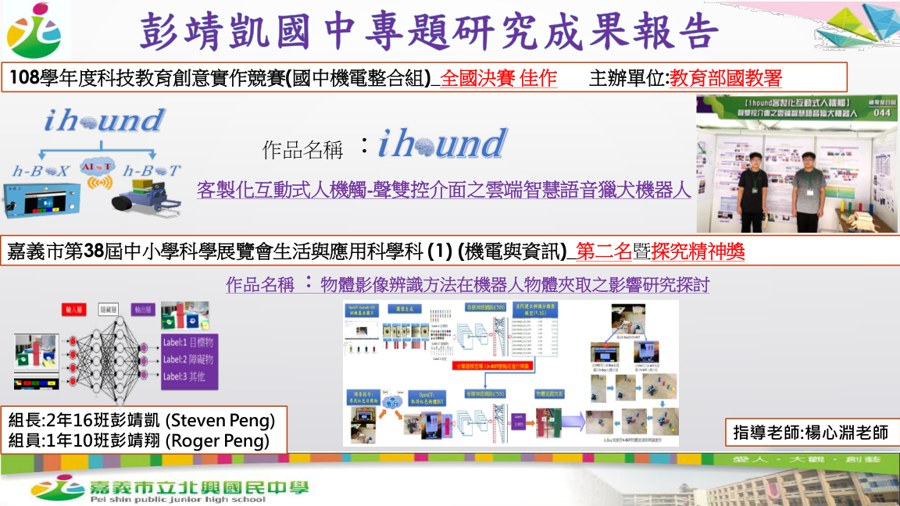
Raspberry Pi / Arduino / OpenCV / Socket / CNN
國中專題研究，整合 h-BOX 與 h-BOT、聲控、電腦視覺、物體追蹤、AIoT 通訊與深度學習物體辨識。
以「課程基礎、專題實作、系統整合」三層能力呈現。
C/C++、Qt、Python、Arduino IDE、Visual Studio、Git、物件導向設計、事件驅動與 GUI 開發。
C++ / Qt
Python / AI 工具
ESP32、Arduino、Raspberry Pi、HX711、DHT11、OLED、I2C、UART(非同步串列通訊)、Wi-Fi、LINE API、Fritzing 接線設計。
Embedded / ESP32
Digital Logic
Azure Speech、語音辨識、語音合成、NLP 斷詞與詞性標註、Word2Vec、One-Hot、SVM/KNN/RF、OpenCV。
NLP / Speech AI
OpenCV / CNN
將成長歷程整理成可閱讀的時間軸，突顯從數理資優、科展、AIoT 到大學電機專題的連續性。
點擊圖片可放大，適合在面談時快速展示獎狀與證明。
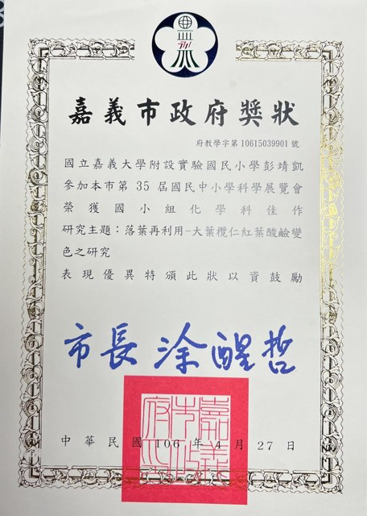
國小組化學科佳作，主題為落葉再利用與酸鹼變色研究。
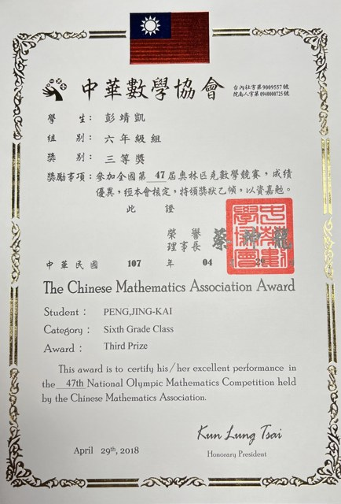
六年級組三等獎。
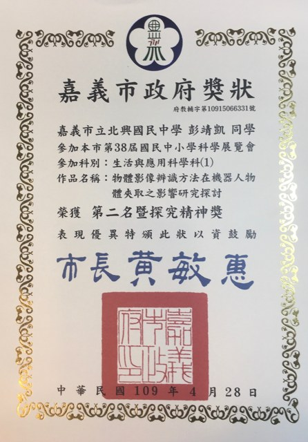
生活與應用科學科第二名暨探究精神獎。
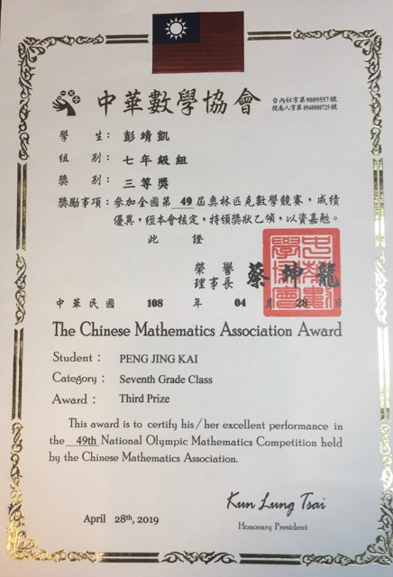
七年級組三等獎。
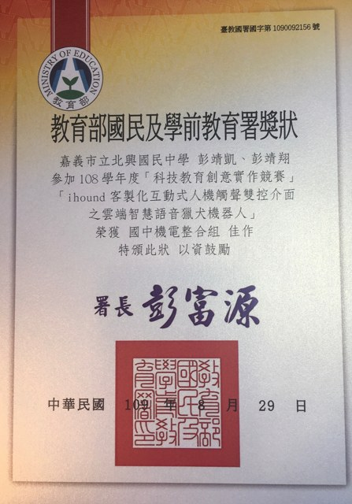
國中機電整合組全國決賽佳作。
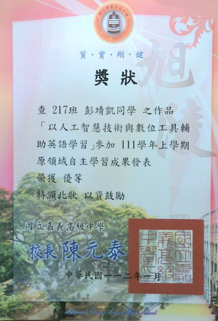
以人工智慧技術與數位工具輔助英語學習，優等。
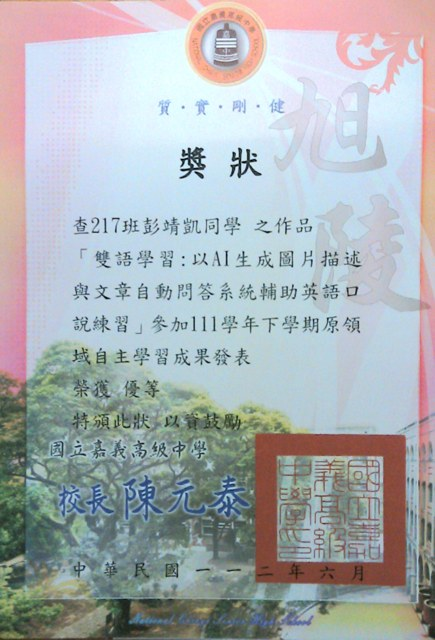
以 AI 生成圖片描述與文章自動問答系統輔助英語口說練習，優等。
高中與國中數理資優證明、課程學習歷程清單與成果總覽。
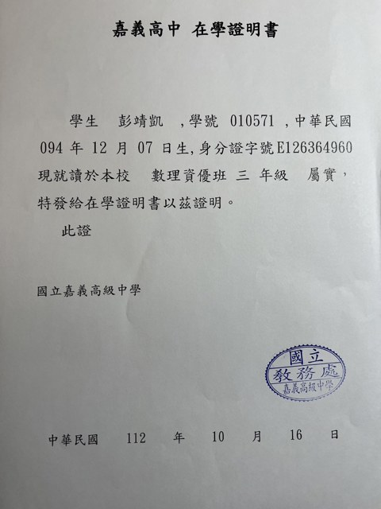
高中階段就讀數理資優班，具備長期數理學習與專題研究背景。
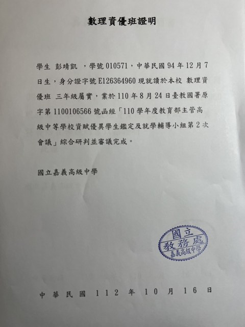
教育部主管高級中等學校資賦優異學生鑑定與就學輔導小組審議完成。
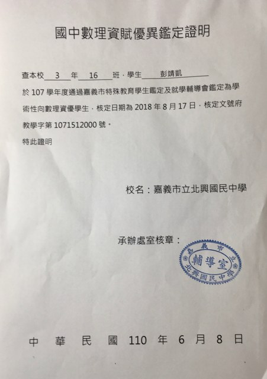
國中階段具學術性向數理資優身分，奠定後續科展與機器人專題基礎。
所有圖片與檔案皆放在 assets 資料夾中，由 HTML 外部切入；可網頁內預覽，也可另開新分頁。
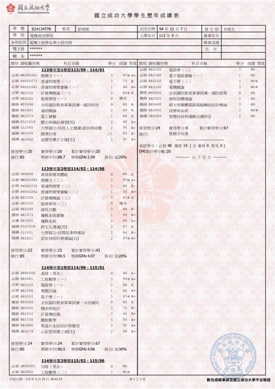
學期 GPA、平均、修習學分與排名資料。
Qt/C++ 2D 遊戲、Robot 模式、Battle 模式、Boss 關卡。
Qt/C++ RPG、探索、捕捉、回合制戰鬥。
ESP32、HX711、DHT11、OLED、LINE 推播與 SDK 模組化。
AI 口語分級、Azure 語音、NLP、機器學習。
iHound AIoT 機器人研究成果。
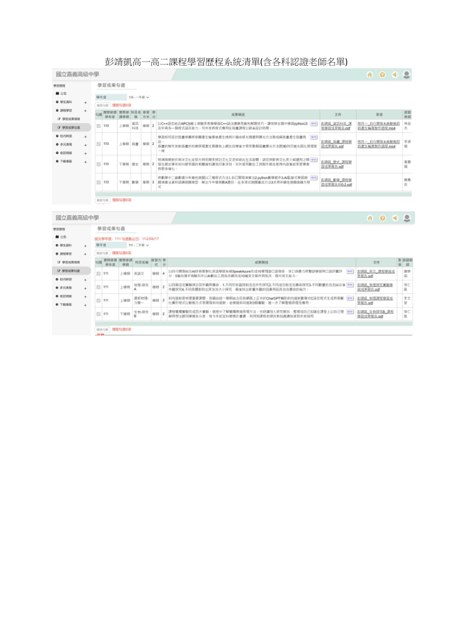
高中課程學習成果與多科認證清單。
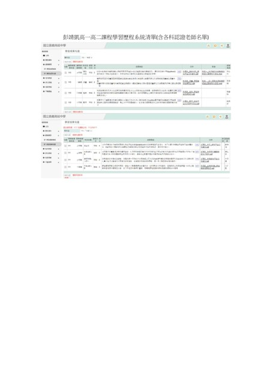
含各科認證教師版本。
K-map 自動化化簡器。
Quine-McCluskey 自動化化簡器。
Draw Bounding Box Engine：Verilog RTL、FSM、SRAM、Otsu、8-connected CCL、Synthesis 與 Gate-level verification。
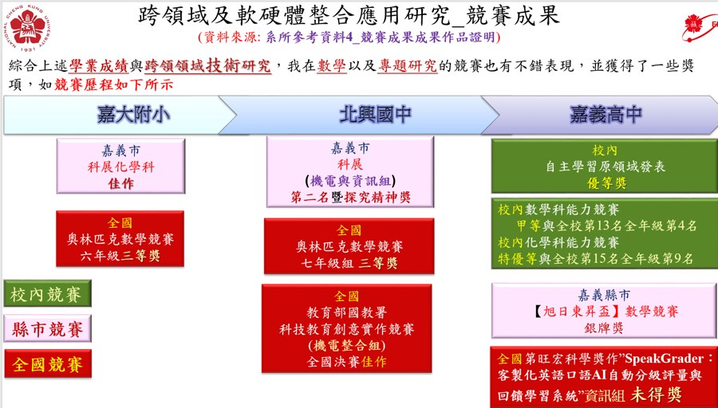
特殊選才申請用簡報檔。